design philosophy
Ideation
During brainstorming, we had many ideas for how this project would look like, but the basic idea that each button should represent its owner and that together, they should form a cohesive world/story is an agreement we reached. Then, we sketched many ideas such as the one shown below. Here are some of them:
- Each button being a little person, where clicking one would cause it to do an action with the others
- Clicking two buttons cause them to pair up and do a common hobby
- The entire scene would change if a person's button was clicked
We also had to decide on a theme, would our buttons have the appearance of people? Stars? Other objects? The team voted and the constellation idea won. It provided a unique interaction — that of connecting stars into constellations, a nice visual metaphor for a team connecting and forming something greater than its parts.
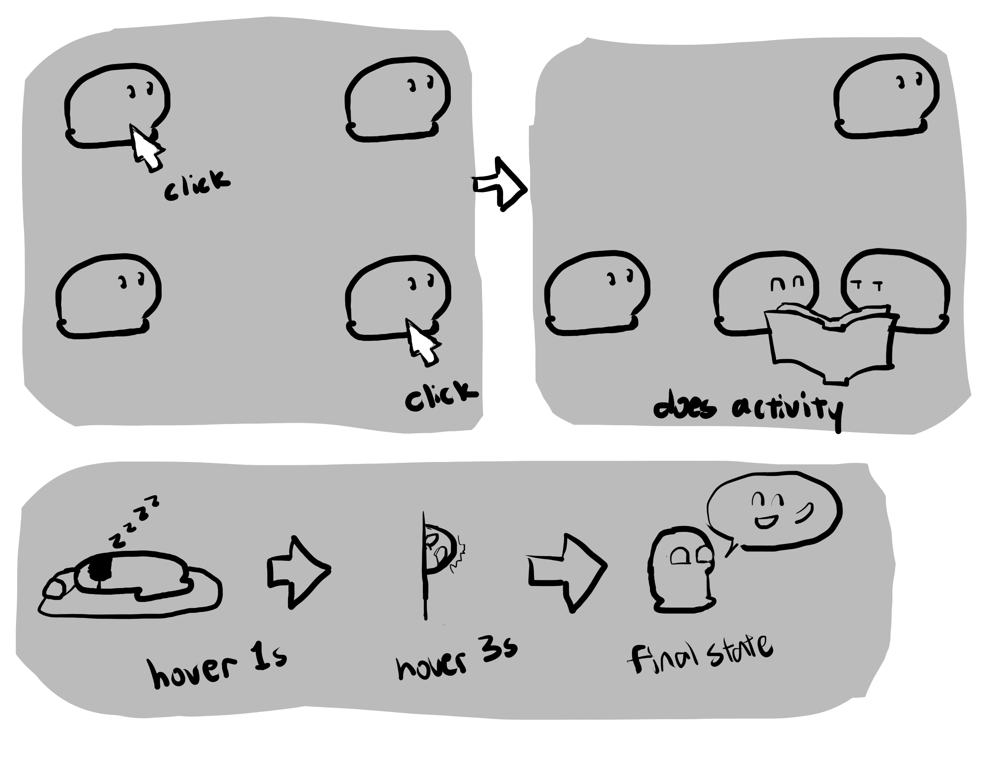
Prototyping and improving
When we decided on the idea of making a team constellation, we had no idea how to represent the hobbies. Would they be icons? Just phrases floating around the stars? A teammate came up with the idea of making the hobbies connected to the stars using thinner constellation lines. Now, the hobbies could fit into the scene as smaller constellations instead of arbitrary floating symbols. Another teammate added animation to the hobby icons so that when multiple people have a matching hobby, they brighten and bounce. In keeping with our setting of the night sky, a teammate got the idea of using the sun and moon on an interactive illustration of our sleep habits. Originally, we had not planned to have a text dialog explaining the differences and similarities between buttons, but after seeing it implemented, we found that it served as a good clarification. I wasn't supportive of the idea at first, but I realized that I had made the mistake of assuming that the subtle features we had designed would be appreciated immediately by the user. This served as a lesson to me that designers should try to think from the user's perspective.
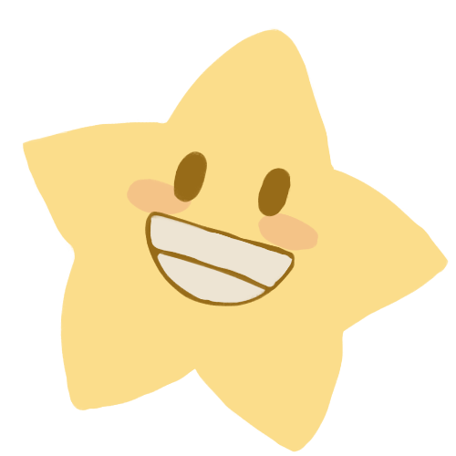
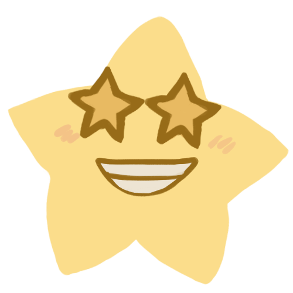
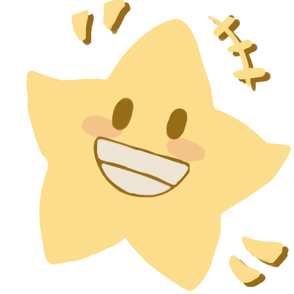
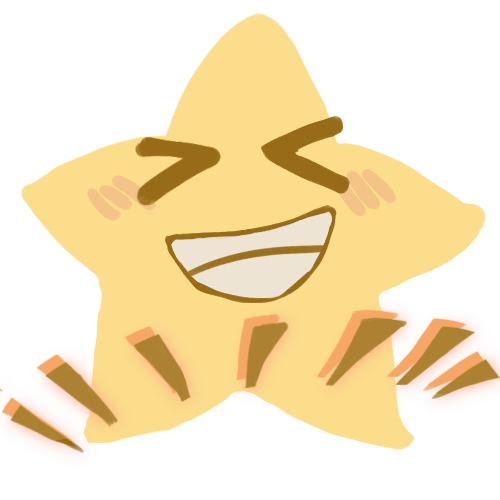
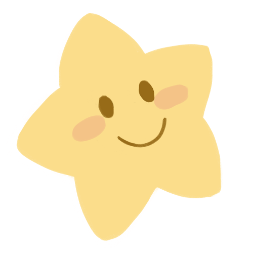
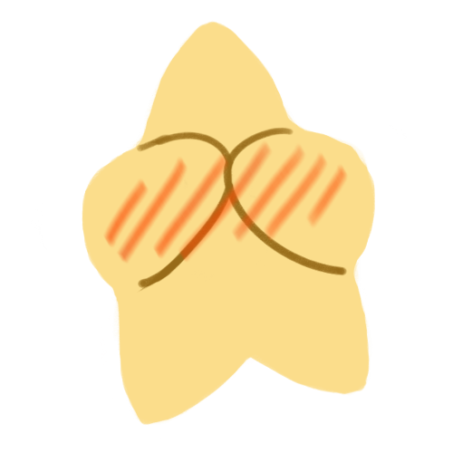
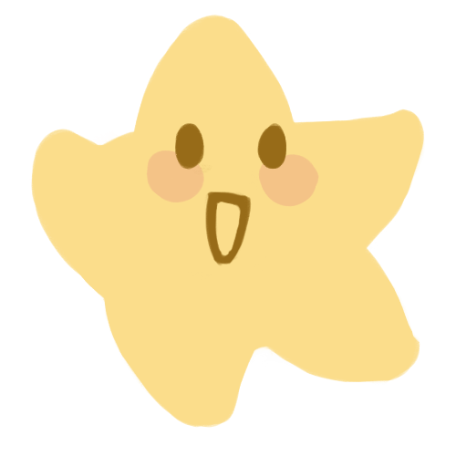
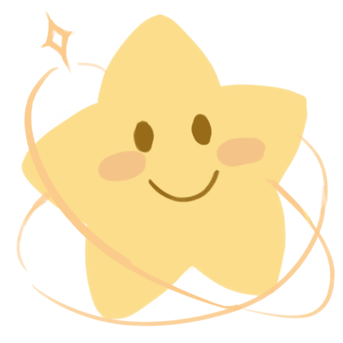
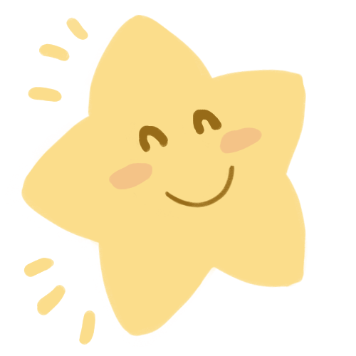
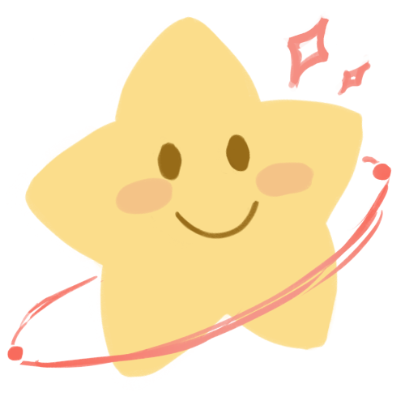
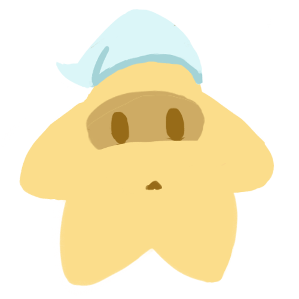
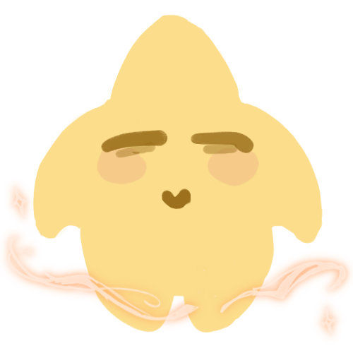
My design philosophy
As a student without much design experience, my personal design philosophy still has much room to grow. Here are some things I noticed myself doing in the approach I took for this project.